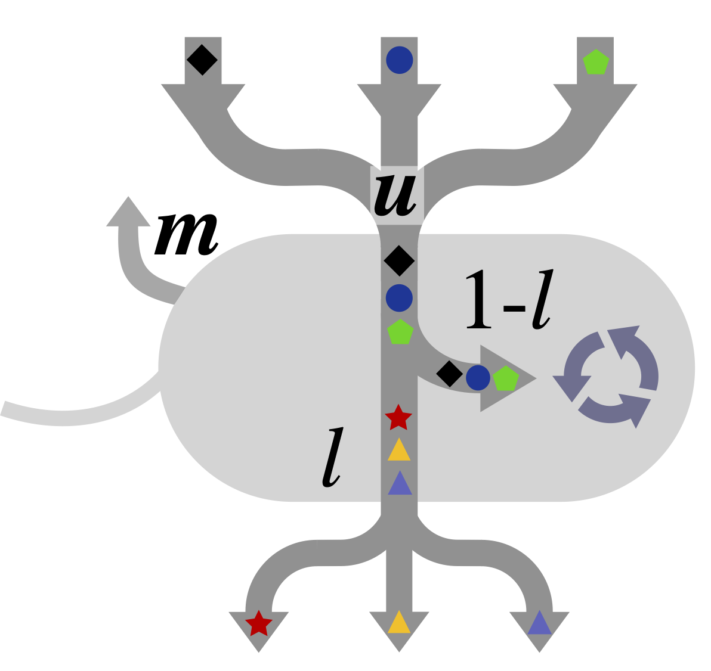

Basic theory#
{kind=link}

Fig. 2 Microbial Consumer-Resource Model framework.#
Why consumer-resource dynamics?#
Many microbiome models describe interactions directly at the species level: species \(i\) helps or inhibits species \(j\). DigiMic instead starts one mechanistic layer earlier. Species interact because they consume, transform, and release resources. This makes the model useful when community behaviour depends on metabolic overlap, by-product production, environmental supply, or cross-feeding.
Microbial Consumer-Resource Model (MiCRM)#
The core framework of DigiMic is the Microbial Consumer-Resource Model (MiCRM). It tracks biomass and resource fluxes in a community by accounting for resource uptake, metabolic by-product secretion, cross-feeding, environmental supply, resource loss, and maintenance respiration. For a community of \(N\) consumers and \(M\) resources, the model used here is:
The consumer equation says that consumer biomass increases through resource uptake after leakage losses and decreases through maintenance or mortality. The resource equation combines four fluxes: external supply, abiotic loss, direct consumption, and replenishment from leaked metabolic by-products.
Parameter |
Meaning |
Code name |
|---|---|---|
\(C_i\) |
Biomass abundance of consumer \(i\) |
first |
\(R_\alpha\) |
Abundance of resource \(\alpha\) |
final |
\(N\) |
Number of consumers |
|
\(M\) |
Number of resources |
|
\(u_{i\alpha}\) |
Uptake rate or preference of consumer \(i\) for resource \(\alpha\) |
|
\(m_i\) |
Consumer maintenance or mortality term |
|
\(\rho_\alpha\) |
External resource input rate |
|
\(\omega_\alpha\) |
Resource decay or washout rate |
|
\(l_{i\beta\alpha}\) |
Fraction of resource \(\beta\) uptake leaked by consumer \(i\) into resource \(\alpha\) |
|
\(\lambda_\alpha\) |
Total leaked fraction of uptake from resource \(\alpha\) |
|
The current implementation treats leakage as consumer-specific through a tensor with shape (N, M, M). This allows two consumers to consume the same resource but release different by-product profiles if needed.
Modular resource structure#
DigiMic includes simple generators for modular communities. In a modular community, subsets of consumers preferentially consume subsets of resources, and leakage can be biased within or between resource modules. This is useful for synthetic experiments because it lets you tune ecological structure without manually filling every matrix entry.
The main control parameters are:
Control |
Interpretation |
|---|---|
|
Number of consumer-resource modules |
|
Strength of within-module preference relative to background random uptake or leakage |
|
Total leakage fraction allocated across leaked by-products |
Larger s_ratio values create clearer module structure. Larger leakage values tend to strengthen cross-feeding because more consumed material returns to the resource pool rather than being assimilated into biomass.
Effective Lotka-Volterra interpretation#
For some questions, it is helpful to summarise the net effect of resource-mediated processes as apparent species interactions. Around a fixed environmental context or equilibrium, MiCRM dynamics can be related to an effective Lotka-Volterra model:
Here, \(r_i\) represents an effective intrinsic growth term and \(\alpha_{ij}\) summarises the net effect of species \(j\) on species \(i\). Importantly, these effective interactions are not assumed directly in DigiMic: they emerge from resource competition, leakage, and cross-feeding. This distinction is useful when interpreting why two species appear competitive, facilitative, or weakly coupled.